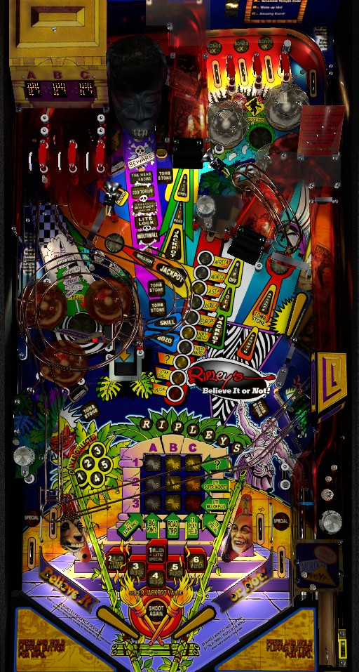

To play multiball, shoot the Shrunken Head center lane repeatedly to light locks at the right ramp, then lock 2 balls to start multiball at the Shrunken Head. (Later in the game, you may need to shoot the center ramp once to light each Shrunken Head shot.) To play modes, shoot the right ramp to qualify a mode, then shoot the vary-target to start it. In either case, knowing how to shoot both ramps at any time (and get control afterwards) is paramount, and being able to backhand the vary-target or right ramp from the right flipper can be very helpful.
The below picture of the Ripley's Believe It or Not! playfield was taken from the VPX recreation by VPin Workshop.

The skill shot is a precise power plunge that enters the center scoop from the right side, indicated by a leftward-pointing arrow labelled Skill directly in the center of the table. This skill shot scores 1,000,000 the first time it is made and increases by 1,000,000 each subsequent time, up to a maximum of 5,000,000. Making this skill shot on all 3 balls of a standard 3-ball game is a basically-free 6,000,000 points, which is often a very meaningful amount in tournament play. However, note that a slightly-too-soft plunge and go directly into the left out lane, and a slightly-too-hard plunge can bounce off the Tombstone targets just above the scoop and arc to the right out lane. Ripley's Believe It or Not! is frequently set up with no or very minimal ball save, so the skill shot comes with a little more risk than it may first seem.
The main progression on Ripley's Believe It or Not! is to play Continent modes. If a mode is flashing in the colum of circular inserts, make a full shot into the vary-target to start that mode. If there is not a mode flashing, shoot the right ramp to qualify one. There are 7 modes, corresponding to the 7 continents of Earth. All modes have a completion criteria which awards a letter in the word "Ripleys" shown just above the ABC-123 grid. Modes can either be timed, or be a 2-ball quick multiball. If you start a multiball mode, no further modes can be started until the multiball ends. If you start a timed mode first, you can then stack it with any multiball mode or with the standard multiball. If you start a timed mode and then stack a second timed mode, the timer for the second mode overwrites the timer for the first, extending the first mode to last until the second one times out. Continent modes can also be started as a mystery award from the center scoop; this will start a random Continent mode instead of the one that is flashing. Pop bumpers rotate which mode is flashing, as well. The exact amount of progress needed to earn a Ripleys Letter in each mode may vary slightly due to game settings.
After playing all 7 Continent modes, no matter how well you did during them, the vary-target will start flashing intensely. Shooting the vary-target at this point will remind you how well you did during each Continent mode of the most recent set, then award a Continent Super Jackpot equal to the sum of all of the mode values you've earned during the game so far. Collecting a Continent Super Jackpot will unlight all mode progress to all you to play the modes again, but you do not lose any Ripleys Letters; also, a regular Super Jackpot will be lit at the Super Jackpot lane, accessible from the upper flipper and located just above the upper loop.
Once you've earned 7 Ripleys Letters, the next vary-target shot will start Atlantis wizard mode. There are 7 Continent modes and 7 Ripleys letters, but you do not need to earn one letter from each; you just need to complete a total of 7 Continent modes, even if that means getting multiple letters from the same mode across multiple laps around the world.
Atlantis wizard multiball is a 3-ball multiball with a generous ball saver. Jackpots are available at the upper loop, center ramp, and right ramp, and have a starting value equal to 100,000 points times the number of Jewels you've collected in the game so far. Jewels are explained in detail later in the guide; you're likely to have at least 10-12 of them by the time your reach Atlantis. Scoring a jackpot unlights it; the Shrunken Head lane relights all jackpots. In addition, the ABC-123 grid will rotate between the 8 possible line-up awards. Shooting the center ramp will collect the currently displayed line-up award, and collecting all 8 of them scores your Continent Super Jackpot. The regular jackpot value during Atlantis can be raised by 50,000 by shooting the Idol in the lower left. When single ball play resumes, Atlantis disappears, resetting the progress on Ripleys Letters so they can be earned again; a glitched animation will play implying that a Ripleys Letter was somehow earned from Atlantis itself, but this is not possible.
The Shrunken Head lane has a list of 5 awards in front of it. If one is flashing, shoot the Shrunken Head lane to earn that award. If there is not an award flashing, shoot the center ramp to cause the next award to flash; this begins to happen after a multiball has been played. The awards are:
The standard multiball has 3 balls. The jackpot value during standard multiball is equal to 50,000 points times the number of Idols collected during the game so far. The 1st Idol is given to you for free, so the jackpot will always be at least 50,000. Jackpots are available at the upper loop, center ramp, and right ramp. Making a jackpot unlights it. Making all 3 jackpots qualifies a Super Jackpot, at the Super Jackpot lane. Making a Super Jackpot relights the three normal jackpots. See the next section for more about Super Jackpots.
Super Jackpots are lit at the Super Jackpot lane, which is located above the upper loop and is accessible from the upper flipper. Super Jackpot is lit by collecting all 3 normal jackpots during standard multiball, from the Row 2 Jewel feature (see below), or by collecting a Continent Super Jackpot after playing all 7 Continent modes. Pop bumpers rotate what the value of a normal Super Jackpot is: the selected value will flash near the flippers, and can be 1,000,000 plus light Special, 2,000,000 plus light extra ball, or 3, 4, 5, or 6 million points. Once a Super Jackpot with a particular value is collected, it will light solidly, and cannot be collected again. Scoring a 7th Super Jackpot starts Frog Frenzy, which is somewhat of a secret wizard mode. Frog Frenzy is a 4-ball multiball with 45 seconds of unlimited ball save. If Frog Frenzy was started during standard or Ripoff multiball, their standard rules apply; in addition, any switch hit anywhere in the game is worth 25,000 points until the ball save expires, at which point Frog Frenzy reverts to being either standard or Ripoff multiball. I have not yet started Frog Frenzy during single bally using the Super Jackpot lit for collecting a Continent Super Jackpot to know what happens.
The center ramp sends the ball up into the Temple, which has three exits. The exits are labelled A, B, and C, and each has a small dot display that can show a number. In single ball play, making the center ramp will award a Jewel and fill in the square of the grid corresponding to the lane's letter column and the displayed number's letter row. If the uppermost arrow on the center ramp reading "Gate Open" is not lit, only the A lane can be made; shoot the right ramp to light Gate Open, at which point a ball up the center ramp can leave the Temple via any lane (though B and C are much more common in this case). Collecting a Jewel changes what number is lit on the lane by which the ball exited; you can reroll the numbers on all 3 lanes by shooting the Super Jackpot lane or as a possible Mystery award. A lane cannot display a number corresponding to a grid cell that is already lit. Completing any 3-in-a-row in the grid resets the grid and gives the listed award. At the beginning of the game, up to 3 Jewels may be spotted for you, requiring fewer shots to complete a 3-in-a-row.
If filling in a Grid cell completes two or three 3-in-a-rows at once, you earn the award associated with each of them.
Idols are collected by shooting the magnet in the lower left of the game. You start the game with 1 Idol for free. Each shot to the magnet awards 1 additional Idol, or 3 Idols if it is used to relight the ramp jackpots during Africa mode. The regular jackpot value during standard Multiball is equal to 50,000 points times the number of Idols you have collected during the game. There is no meaningful limit to the number of Idols you can accumulate, but the regular jackpot value does max out at 5,000,000 points after 100 Idols. The numbered inserts near the Idol magnet show how many Idols you have, but it overflows every 15. For example, if you have 24 Idols, the 5 and 4 inserts will flash to show that you have 9 in the current set of 15, and you just have to remember or which the DMD to know how many sets of 15 you've completed.
Reaching 12 Idols in a game lights the vary-target for extra ball. Reaching 40 Idols in a game lights the vary-target for Special. Every 25 Idols starting at 65 lights the vary-target for ?, which is the same mystery score feature as completing Row 1 of the Grid as described above.
Shots to the vary-target when it does not start a Continent mode award letters in Ripoff. Spell Ripoff to light it at the right ramp. Ripoff is a 2-ball multiball. The same rules as standard Multiball are used- score jackpots at both ramps and the upper loop to light a Super Jackpot at its usual lane- but the value of a regular jackpot is always equal to only 100,000 points times the number of balls in play. The only way to have more than 2 balls in play is by getting Add A Ball as a Mystery award.
Several visual bugs can be seen on the DMD during Ripoff. Shooting the vary-target during Ripoff increases the normal jackpot value. If you have already maxed out the normal jackpot at 5,000,000 by collecting 100 Idols, the DMD will say the jackpot was raised to 5,050,000, but this does not actually happen and the 5,000,000 limit remains in effect. Also, especially after scoring a Super Jackpot during Ripoff, the counter on the DMD which shows jackpots remaining until the Super Jackpot is lit will error out and display hexadecimal digits, e.g., "FF more lights super". In this case, you have to use the playfield lights to accurately determine which jackpots are available.
During single-ball non-mode play, 1 Penguin Lap is awarded by shooting the left orbit or right orbit. and 2 Penguin Laps are awarded for shooting the upper loop. At 5 Penguin Laps and every 10 thereafter, a Penguin Jackpot is ready. To start the Penguin Jackpot, shoot the right orbit; a post at the top of the orbit will block the ball, and it will roll back down to the upper right flipper. From here, immediately shoot the upper loop for a Penguin Jackpot. This scores a flat value of 1,000,000 and is completely forgettable against the game's other scoring.
Mystery awards are given by shooting the center scoop from below. Qualify a Mystery award by lighting Believe It, Or, and Not!; to earn one of these, either shoot the center scoop or shoot the Super Jackpot lane. The Mystery award often tries to give you something helpful, and there seem to be awards exclusve to specific modes. This is a list of awards I have seen, and is almost certainly not exhaustive.
Bozo is a second type of mystery award. To light it, spell Bozo. Letters are earned by entering the center scoop from the right side or shooting the right ramp when it is not lit for anything else. To earn Bozo, you must enter the center scoop from the right side after earning its letters. Similar to the Camera on Twilight Zone, the game will reveal what the next Bozo award will be whenever you get one. Awards that I have seen include:
This list is also very unlikely to be exhaustive.
Ripley's Believe It or Not! has a conventional in/out lane setup. There are no posts on the in/out lane rail, making it quite difficult to nudge a ball out of the in/out lane area. The out lanes tend to be quite hungry, to make up for the fact that the flippers are actually slightly closer together than normal. Out lanes can be lit alternately for Special in numerous ways. If two different Light Specials are earned, both out lanes can be lit for Special at once. In competition/novelty play, Special scores 3,000,000. The left in lane lights the right orbit for Advance Tombstones.
Base bonus is calculated as the sum of the following:
...all multiplied by the bonus multiplier, which is increased 1 at a time up to a maximum of 5x by either lighting all 3 top lanes or earning Advance Bonus X from a Bozo award. Attempting to advance the bonus multiplier past 5x scores 250,000. Bonus is usually not a meaningful portion of scoring, unless you have a ridiculous number of Idols or Jewels coupled with a large multiplier.
Note that on default settings, Ripley's Believe It or Not! will only give 1 warning before tilting instead of the usual 2.
| If you need... | Try... |
| 1,000,000 points | ...starting any Continent mode, or qualifying and starting regular Multiball. |
| 3,000,000 points | ...playing Africa or North America multiball Continent modes for as long as possible, getting to a Super Jackpot in standard multiball, or getting a couple regular jackpots in standard multiball if your Idol value has been raised enough. |
| 10,000,000 points | ...playing a really long North America mode or standard multiball, or playing all 7 Continent modes to earn a Continent Super Jackpot. |
| 30,000,000 points | ...playing Continent modes all day to build and qualify Continent Super Jackpots and/or Atlantis wizard mode. |
| 50,000,000 points or more | ...stacking 2x Playfield from the Grid with a Continent Super Jackpot collect, playing Atlantis wizard mode, or using standard multiball to play Frog Frenzy by lighting and attempting to collect a 7th Super Jackpot. |